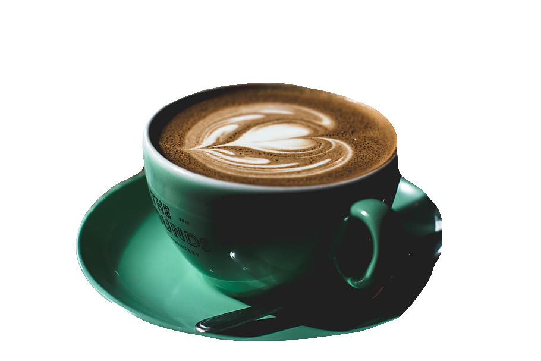

Welcome to Old Spike coffee
The UK's first social enterprise, speciality coffee roastery
A Treat For All Senses
Welcome to the world of Old Spike Coffee: a zone where good vibes gather and bad moods disappear.
Breathe in the heady aroma of fresh-ground, fresh-brewed coffee from beans picked the world over. Savour your every sip, bite and moment with us. The rest of the world can wait.

Old Spice Coffee is based in Central London. It was founded by three coffee enthusiasts and has grown to be a team of talented coffee professionals, with a wealth of experience and passion for what we do.
Almost ten years after opening its doors on Leather Lane, Old Spice Coffee remains a gathering place for locals and a destination for guests from around the world. Curious, we’re on a mission to continually evolve, constantly experimenting with new ingredients and techniques. Yet we always stay true to our philosophy: serve coffee and food that makes you happy, with a service that makes you smile.